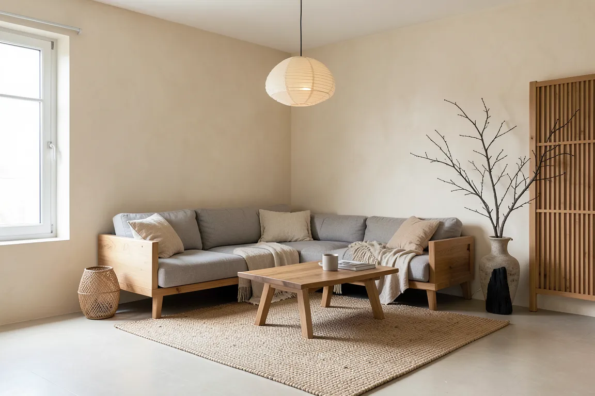

Смесь скандинавской и японской комнаты. Низкая тяжёлая деревянная мебель светлых и тёмных тонов стоит в тёплой молочно-белой комнате с широким пустым полом; бумажный свет, лён, керамика и реечные ширмы дают фактуру, а отношение татами 1:2 упорядочивает план.

Главная идея
Покой идёт от пустоты и от немногих природных вещей, сделанных руками и поставленных с заботой.
Принципы дизайна
Держите мебель низкой: сиденья 38–40 см и столы 35–40 см, чтобы уровень глаз в комнате опустился.
Оставляйте пустыми 70% пола и 85% стен.
Держите отношение 1:2 в коврах, панелях, подиумах кроватей и ширмах, по мату татами 91 × 182 см.
Сочетайте светлый дуб или ясень с одним тёмным элементом, например обожжённым или чёрным морёным деревом, с разницей отражения 40–50 пунктов.
Берите только матовые отделки: промасленное дерево, известковую или глиняную штукатурку, неглазурованную или матово-глазурованную керамику.
Делите зоны реечными ширмами из реек 3 см с зазором 3 см, а не стенами.
Показывайте 1 или 3 предмета на поверхности, асимметрично, с одним высоким элементом, например веткой.
Антипаттерны
Глянцевый лак, хром или зеркальные поверхности
Насыщенный цвет на любой поверхности больше предмета